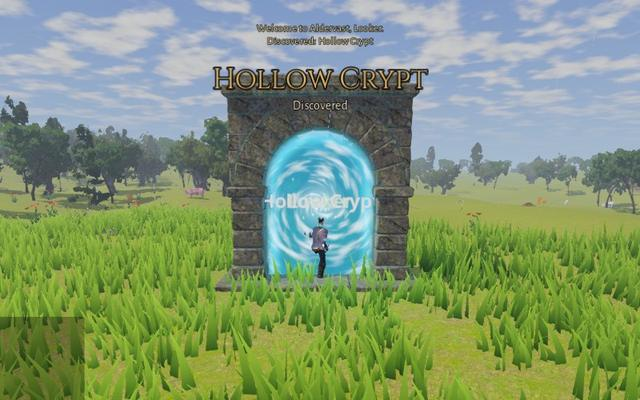

Old Watchtower
Landmark- Kind
- Landmark
- Region
- Brightmeadow Vale
- Discovery
- 60 experience the first time you find it
- Quests
- Signals from the Watchtower

Landmarks, hidden places, dungeon gates, world boss lairs and the Lattice Gate.





Calathrax, Elder Wyrm circles the ring when the Lattice flares (the world quest Wyrmfall).


Kept by Gatewarden Ysolde. Waystones used here open expeditions into the Lattice's impossible places.

A bar of sand and reef on the Saltreach coast where the Merrow's Due lies beached, her stern torn away; spars, barrels and crates lie among the rocks. Old Carapace carries the stern castle on its back, and sleeps buried in the sand. When it wakes, the sea runs out of the bay.

A broken rim of black crags, open to the land, with boulders thrown across its floor of ash and glowing melt. Vorgrath lies at its heart as a cold heap of stone until it wakes.

A clearing in the Thornwood ringed by ten standing stones, two of them fallen, among felled logs, stumps and heaps of shed branches. Elderhorn walks in from the trees when it wakes.